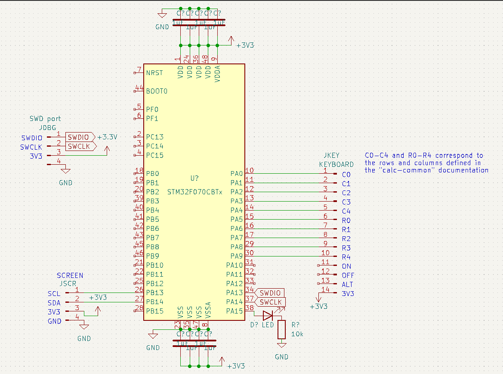
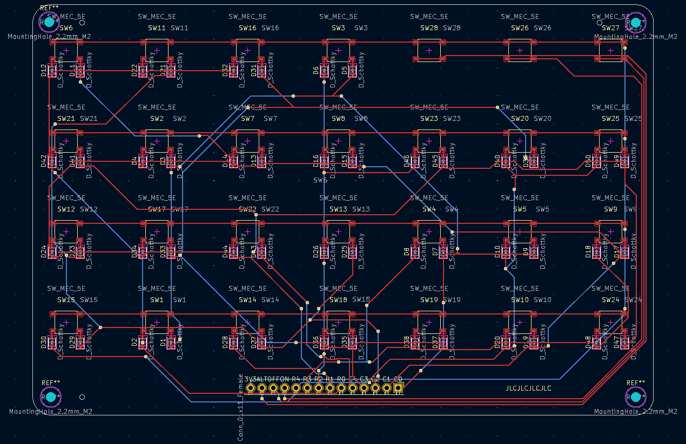

The QFP-48 breakout board when it first arrived

The STM32F070CBT6 MCUs that I'm currently using

My minimal setup for the MCU

The setup that I used to debug I2C for the screen

calc-rs showing off order of operations and negative numbers

The screen on the calculator working for the first time

The current schematic of the calculator

The current design of the keyboard (I plan on making it a lot smaller in the final iteration)
The setup that I used to test the keyboard matrix
calc-rs running on the device
calc-simulator showing off basic operation and menus